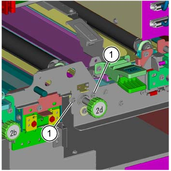
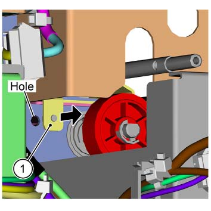
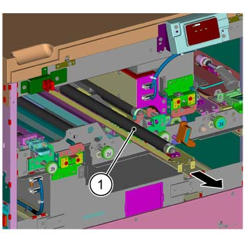

REP 76.6.1 Trans 2 滑槽 组件 
参考 PL:PL 76.6
Removal

执行IOT的[关机]步骤. 确认电源开关已关闭并拔掉电源插头.

静电可能损坏电气部件. 静电可能损坏电气部件. 维修时请始终佩戴腕带. If a wrist 条带 不是 可用的, touch 一些 metallic parts 在...之前 servicing to discharge the static electricity.
打开前盖板.
拆卸内盖板. (PL 76.1)
拆卸 后面 上方 盖板. (PL 76.2)
拆卸 WR 入口 组件. (REP 76.4.1)
拆卸 TR2 Encoder. (REP 76.8.2)
拆卸螺钉（x2） securing the Trans 2 滑槽 组件. (图 1)
拆卸螺钉（x2）.

(图 1) ism476076
拆卸 Stud 销 (x2) 该 secures the Trans 2 滑槽 组件 on 后面 从 the hole (x2) of 框架. (图 2)
拆卸 Stud 销 (x2) 从 the hole (x2) of 框架.

(图 2) ism476077
拆卸 Trans 2 滑槽 组件. (图 3)
拆卸 Trans 2 滑槽 组件.

(图 3) ism476078
安装
To 安装, carry 出 the removal steps 按相反顺序.
当...时 the Trans 2 滑槽 组件 已更换, 执行 以下 procedures.
执行 纸张 转印 调整 的 DC809 和 执行 调整 纸张 对齐/套准 as necessary. (ADJ 76.8.1)